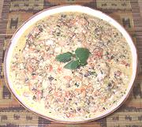

|
Frog Legs with Sesame-CoconutAfrica - Sub-Saharan | ||||
| Serves: Effort: Sched: DoAhead: |
4 main *** 1-1/4 hrs Most |
In Africa whole frogs are cooked, but that's unlikely in the US where only leg pairs are widely available. The less adventurous can cook this recipe using chicken wings. The sauce overwhelms the frog legs by design - the legs appear as your rice absorbs the sauce. | |||
|
2 6 1/2 2 1/4 14 10 3 1 1/2 2 2 |
# oz in cl c oz oz oz t t T |
Frog Legs (1) Onion Ginger root Garlic Sesame seeds (2) Coconut Milk Tomatoes Mushrooms Chili, fresh (1) Salt Mint Leaves Scallions |
Prep - (30 min)
|